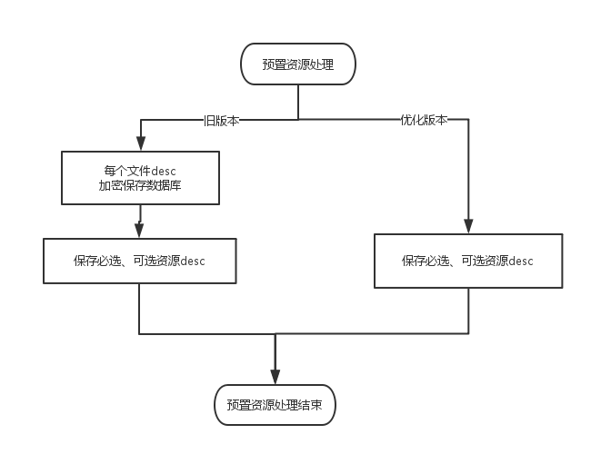
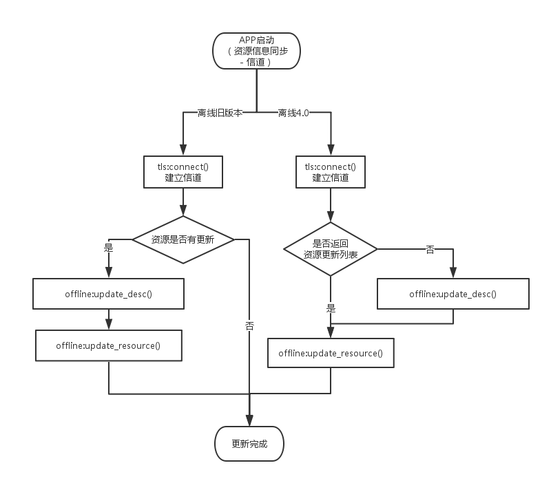
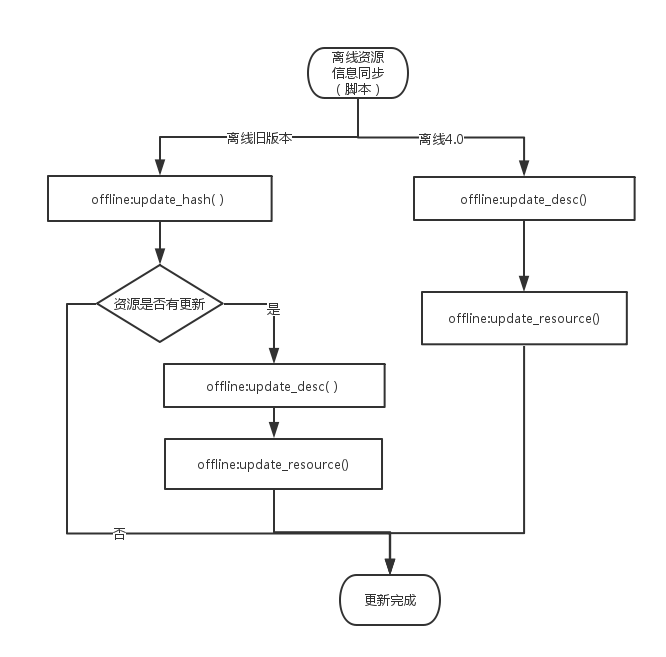
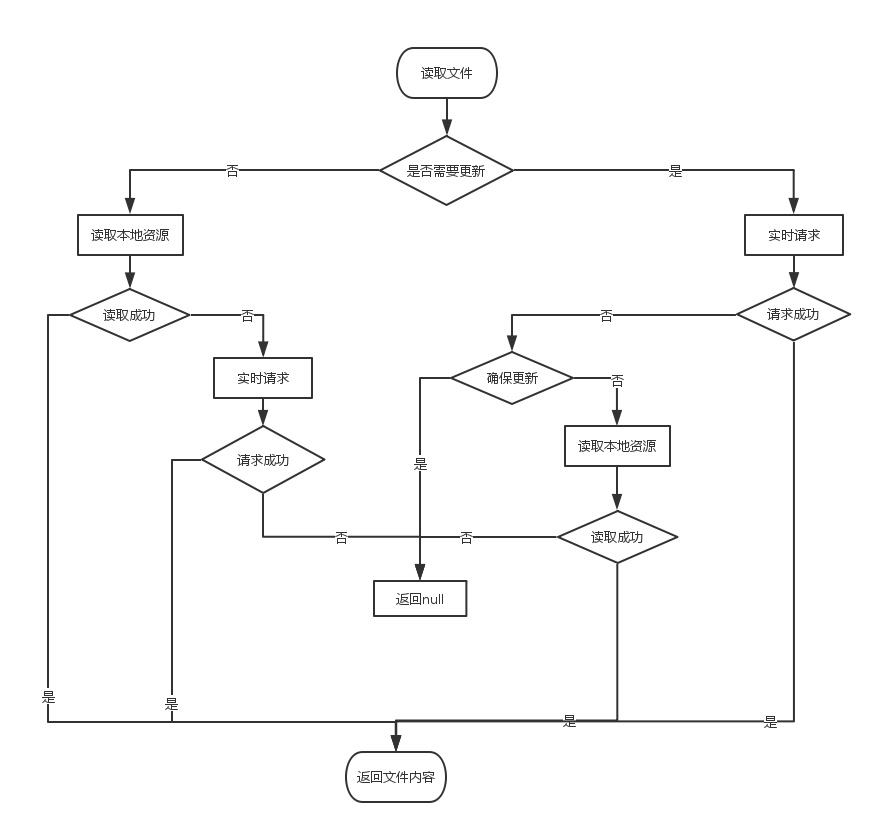
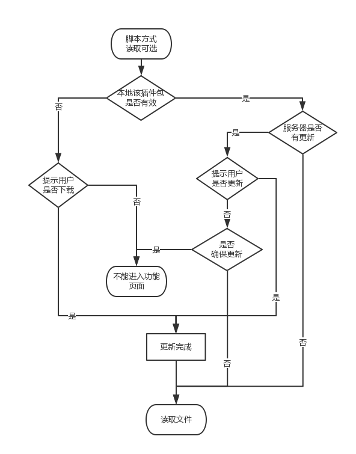

4.0版本主要是对离线模块做了优化。包括预置资源的处理、资源的更新、读取流程及信道的优化。
Android 客户端开发人员
@Override
public void onAdjustEMPConfig(EMPConfig empConfig) {
super.onAdjustEMPConfig(empConfig);
...
// 配置离线协议版本 4.0
empConfig.setOfflineVersion(4.0);
}
预置资源处理流程变更：

说明：
省去旧版本的第一个步骤，提高预置处理时间
预置资源的处理时间与资源个数成正比，与设备性能成正比。
经信道资源同步方式：

脚本同步方式：

脚本文件（assets/EMPTemplate.lua）：
-- 建立库类结构
APP = {};
-- 构造函数，返回一个APP对象
function APP:new(o)
o = o or {}; -- create table if users does not provide one
setmetatable(o, self);
self.__index = self;
return o;
end
local mPageContent; -- 建立信道返回的页面内容
local mOfflineSyncMode ; -- 离线同步模式 0:脚本控制 1: 同步 ; 2: 异步
local mAppOfflineCallBack;
local mAppOfflineFinishedCallback; -- app 自定义结束回调方法
local mOfflineCallBack;
-- 进入信道返回的页面
function replace()
location:replace(mPageContent);
end
-- 离线资源更新完成的回调方法
function offlineFinishedCallback(failtable)
mAppOfflineFinishedCallback(failtable); -- 调用app自定义的方法
replace();
end
-- 异步更新弹出[确定][取消]
function alertCallback_Async(btnIndex)
if btnIndex == 0 then -- 用户点击[确定]按钮
offline:update_resource(mAppOfflineCallBack);
end
end
-- 同步更新弹出[确定][取消]
function alertCallback_Sync(btnIndex)
if btnIndex == 0 then -- 用户点击[确定]按钮
offline:update_resource(mOfflineCallBack);
else
replace();
end
end
-- 离线资源异步更新
function offlineAsyncUpdate(mustUpdate)
if mustUpdate == 0 then
window:alert("您有新的离线资源需要下载，是否更新？", "确定","取消", alertCallback_Async);
elseif mustUpdate == 1 then
offline:update_resource(mAppOfflineCallBack);
window:alert("正在更新离线资源!", "确定");
elseif mustUpdate == -1 then
window:alert("最新离线资源", "确定");
end
end
-- 离线资源同步更新
function offlineSyncUpdate(mustUpdate)
if mustUpdate == 0 then
window:alert("您有新的离线资源需要下载，是否更新？", "确定","取消", alertCallback_Sync);
elseif mustUpdate == 1 then
offline:update_resource(mOfflineCallBack);
window:alert("正在更新离线资源!", "确定");
elseif mustUpdate == -1 then
replace();
window:alert("最新离线资源", "确定");
else
window:alert("服务器返回错误信息!", "确定");
replace();
end
end
-- 信道回调
function tlsCallback(returnContent)
mPageContent = returnContent["content"]; -- 页面报文
if mOfflineSyncMode == 1 then -- 同步
local mustUpdate = returnContent["mustUpdate"];
offlineSyncUpdate(mustUpdate);
elseif mOfflineSyncMode == 2 then
replace(); -- 先做页面替换
local containDesc = returnContent["containDesc"];
if containDesc == 0 then -- 服务器没有返回资源描述
offline:update_desc(offlineAsyncUpdate);
elseif containDesc == 1 then -- 服务器已返回资源描述
local mustUpdate = returnContent["mustUpdate"];
offlineAsyncUpdate(mustUpdate);
end
elseif mOfflineSyncMode == 0 then -- 脚本控制
replace();
offline:update_desc(offlineAsyncUpdate);
end
end
function APP:init(processCallback, finishedCallback, offlineSyncMode)
mOfflineSyncMode = offlineSyncMode;
mAppOfflineCallBack = {processCallback = processCallback, finishedCallback = finishedCallback};
mOfflineCallBack = {processCallback = processCallback, finishedCallback = offlineFinishedCallback};
mAppOfflineFinishedCallback = finishedCallback;
local offlineVersion = offline:version(); -- 获取离线资源版本
tls:connect(tlsCallback, mOfflineSyncMode);
end
需要先加载lua脚本文件 <script type="text/x-lua" src="EMPTemplate.lua"></script>
异步方式更新代码示例如下：
local offlineSyncMode = 2; -- 0：脚本控制 1：信道同步 2：信道异步
-- 下载进度回掉：
function processCallback(downNum, totalNum)
if bgCtrl[1]:getPropertyByName("hide") == "true" then
bgCtrl[1]:setPropertyByName("hide", "false");
end
local persent = math.floor(downNum * 100 / totalNum);
local pers = persent * 2
if bgCtrl and #bgCtrl > 0 then
foreignCtrl[1]:setStyleByName("width", pers);
fontCtrl[1]:setPropertyByName("text", persent.."%");
end;
end
-- 下载结束回掉：
function finishedCallback(failtable)
local failPaths = "";
if failtable and #failtable > 0 then
for k1,v1 in pairs(failtable) do
failPaths = failPaths..v1..",";
end;
window:alert("下载失败文件："..failPaths);
else
window:alert("下载完成");
end;
end
app = APP:new{};
--[[
processCallback：下载进度回调；
finishedCallback：下载结束回调；
offlineSyncMode：离线资源同步模式(0：脚本控制；1：同步；2：异步)
]]
app:init(processCallback, finishedCallback, offlineSyncMode);
说明：
离线同步模式：
项目具体使用可以只修改offlineSyncMode变量值。也可以修改脚本完全自定义。
适用于所有资源读取

客户端资源读取接口统一命名：
读取EWP资源接口：
public byte[] readResourceFile(String fileName);
public byte[] readResourceFile(String fileName, String appname);
读取H5资源接口：
public final byte[] readResFileH5(String fileName) ;
public final byte[] readResFileH5(String filePath, String appName) ;
推荐的更新、访问流程：

4版本开始S值只能与服务器同步，客户端不能自主删除。
具体使用方式参考使用手册。离线资源Offline
| Date | Note | Modifier |
|---|---|---|
| 2016-3-24 | 离线协议4.0 使用指南 | liu.dongmei |